year jan feb mar apr may jun jul aug sep oct
1 1850 -0.702 -0.284 -0.732 -0.570 -0.325 -0.213 -0.128 -0.233 -0.444 -0.452
2 1851 -0.303 -0.362 -0.485 -0.445 -0.302 -0.189 -0.215 -0.153 -0.108 -0.063
3 1852 -0.308 -0.477 -0.505 -0.559 -0.209 -0.038 -0.016 -0.195 -0.125 -0.216
4 1853 -0.177 -0.330 -0.318 -0.352 -0.268 -0.179 -0.059 -0.148 -0.409 -0.359
5 1854 -0.360 -0.280 -0.284 -0.349 -0.230 -0.215 -0.228 -0.163 -0.115 -0.188
6 1855 -0.176 -0.400 -0.303 -0.217 -0.336 -0.160 -0.268 -0.159 -0.339 -0.211
7 1856 -0.119 -0.373 -0.513 -0.371 -0.119 -0.288 -0.297 -0.305 -0.459 -0.384
8 1857 -0.512 -0.344 -0.434 -0.646 -0.567 -0.310 -0.544 -0.327 -0.393 -0.467
9 1858 -0.532 -0.707 -0.550 -0.517 -0.651 -0.580 -0.324 -0.280 -0.339 -0.200
10 1859 -0.307 -0.192 -0.334 -0.203 -0.310 -0.250 -0.285 -0.104 -0.575 -0.255
11 1860 -0.186 -0.428 -0.643 -0.335 -0.290 -0.307 -0.116 -0.193 -0.229 -0.198
12 1861 -0.890 -0.506 -0.465 -0.395 -0.761 -0.183 -0.221 -0.107 -0.331 -0.355
13 1862 -0.749 -0.773 -0.402 -0.240 -0.232 -0.338 -0.340 -0.694 -0.413 -0.420
14 1863 0.131 -0.020 -0.356 -0.241 -0.320 -0.402 -0.416 -0.321 -0.324 -0.381
15 1864 -0.937 -0.630 -0.509 -0.538 -0.449 -0.162 -0.146 -0.310 -0.439 -0.701
16 1865 -0.093 -0.602 -0.639 -0.224 -0.260 -0.270 -0.128 -0.207 -0.075 -0.272
17 1866 0.039 -0.212 -0.595 -0.263 -0.528 0.108 0.027 -0.261 -0.225 -0.417
18 1867 -0.305 0.022 -0.714 -0.251 -0.542 -0.295 -0.231 -0.225 -0.095 -0.179
19 1868 -0.704 -0.466 -0.070 -0.371 -0.069 -0.176 0.147 -0.037 -0.196 -0.232
20 1869 -0.259 0.270 -0.589 -0.224 -0.281 -0.370 -0.286 -0.072 -0.186 -0.422
21 1870 -0.078 -0.450 -0.406 -0.214 -0.165 -0.209 0.016 -0.262 -0.263 -0.393
22 1871 -0.527 -0.546 0.013 -0.144 -0.315 -0.223 -0.011 -0.221 -0.457 -0.479
23 1872 -0.305 -0.402 -0.471 -0.150 -0.039 -0.208 -0.115 -0.027 -0.128 -0.225
24 1873 -0.018 -0.345 -0.275 -0.521 -0.411 -0.258 -0.162 -0.161 -0.357 -0.402
25 1874 0.054 -0.440 -0.562 -0.507 -0.466 -0.458 -0.174 -0.368 -0.212 -0.436
26 1875 -0.577 -0.613 -0.598 -0.462 -0.176 -0.234 -0.302 -0.183 -0.274 -0.371
27 1876 -0.311 -0.265 -0.383 -0.300 -0.530 -0.284 -0.134 -0.241 -0.434 -0.385
28 1877 -0.325 0.057 -0.293 -0.325 -0.449 -0.088 0.010 0.150 0.028 0.055
29 1878 0.173 0.404 0.342 0.324 -0.083 0.015 -0.050 -0.024 0.018 -0.120
30 1879 -0.197 -0.154 -0.097 -0.215 -0.211 -0.270 -0.233 -0.169 -0.213 -0.121
31 1880 -0.064 -0.176 -0.105 -0.147 -0.241 -0.308 -0.250 -0.115 -0.233 -0.387
32 1881 -0.362 -0.238 -0.187 -0.133 -0.030 -0.229 -0.151 -0.128 -0.244 -0.284
33 1882 0.114 -0.009 -0.053 -0.283 -0.373 -0.317 -0.185 -0.221 -0.155 -0.337
34 1883 -0.409 -0.322 -0.342 -0.394 -0.253 -0.119 -0.195 -0.209 -0.278 -0.381
35 1884 -0.418 -0.217 -0.459 -0.529 -0.392 -0.413 -0.424 -0.410 -0.342 -0.322
36 1885 -0.508 -0.411 -0.484 -0.472 -0.521 -0.488 -0.311 -0.510 -0.333 -0.249
37 1886 -0.401 -0.455 -0.415 -0.336 -0.191 -0.387 -0.285 -0.341 -0.433 -0.363
38 1887 -0.566 -0.556 -0.458 -0.436 -0.354 -0.406 -0.267 -0.367 -0.343 -0.506
39 1888 -0.603 -0.453 -0.543 -0.243 -0.349 -0.291 -0.308 -0.281 -0.216 -0.106
40 1889 -0.054 -0.095 -0.068 0.013 -0.079 -0.149 -0.196 -0.227 -0.381 -0.299
41 1890 -0.324 -0.366 -0.460 -0.319 -0.425 -0.378 -0.414 -0.421 -0.477 -0.504
42 1891 -0.515 -0.467 -0.371 -0.360 -0.207 -0.300 -0.332 -0.318 -0.204 -0.332
43 1892 -0.407 -0.121 -0.459 -0.483 -0.401 -0.466 -0.535 -0.445 -0.325 -0.444
44 1893 -0.962 -0.723 -0.374 -0.562 -0.551 -0.463 -0.278 -0.288 -0.440 -0.271
45 1894 -0.454 -0.379 -0.380 -0.379 -0.426 -0.493 -0.316 -0.343 -0.465 -0.443
46 1895 -0.497 -0.678 -0.527 -0.408 -0.415 -0.332 -0.359 -0.267 -0.286 -0.343
47 1896 -0.224 -0.233 -0.384 -0.350 -0.207 -0.124 -0.112 -0.068 -0.111 -0.130
48 1897 -0.203 -0.124 -0.276 -0.070 -0.028 -0.162 -0.165 -0.160 -0.142 -0.262
49 1898 -0.084 -0.378 -0.752 -0.569 -0.471 -0.322 -0.383 -0.309 -0.335 -0.561
50 1899 -0.212 -0.501 -0.542 -0.347 -0.311 -0.392 -0.283 -0.150 -0.140 -0.189
51 1900 -0.246 -0.164 -0.276 -0.252 -0.276 -0.184 -0.193 -0.184 -0.223 -0.060
52 1901 -0.182 -0.270 -0.246 -0.193 -0.197 -0.159 -0.194 -0.199 -0.349 -0.298
53 1902 -0.239 -0.270 -0.393 -0.449 -0.405 -0.449 -0.392 -0.369 -0.370 -0.486
54 1903 -0.274 -0.204 -0.355 -0.472 -0.464 -0.551 -0.496 -0.593 -0.528 -0.658
55 1904 -0.641 -0.603 -0.659 -0.553 -0.538 -0.526 -0.530 -0.483 -0.485 -0.480
56 1905 -0.471 -0.697 -0.461 -0.555 -0.343 -0.329 -0.298 -0.309 -0.322 -0.370
57 1906 -0.073 -0.238 -0.293 -0.114 -0.336 -0.296 -0.321 -0.324 -0.388 -0.353
58 1907 -0.443 -0.519 -0.343 -0.508 -0.552 -0.528 -0.407 -0.461 -0.413 -0.359
59 1908 -0.423 -0.417 -0.636 -0.545 -0.474 -0.478 -0.478 -0.539 -0.458 -0.586
60 1909 -0.583 -0.543 -0.689 -0.609 -0.589 -0.520 -0.585 -0.325 -0.402 -0.480
61 1910 -0.359 -0.517 -0.485 -0.453 -0.473 -0.486 -0.469 -0.443 -0.443 -0.484
62 1911 -0.558 -0.767 -0.701 -0.719 -0.602 -0.574 -0.516 -0.501 -0.511 -0.465
63 1912 -0.362 -0.297 -0.385 -0.336 -0.377 -0.320 -0.458 -0.561 -0.563 -0.643
64 1913 -0.465 -0.515 -0.534 -0.433 -0.509 -0.510 -0.443 -0.395 -0.428 -0.429
65 1914 -0.092 -0.226 -0.335 -0.388 -0.280 -0.290 -0.337 -0.215 -0.261 -0.153
66 1915 -0.117 -0.057 -0.193 -0.056 -0.218 -0.221 -0.118 -0.076 -0.141 -0.259
67 1916 -0.245 -0.186 -0.405 -0.344 -0.363 -0.473 -0.380 -0.348 -0.343 -0.403
68 1917 -0.684 -0.762 -0.826 -0.476 -0.655 -0.351 -0.120 -0.223 -0.123 -0.390
69 1918 -0.505 -0.524 -0.446 -0.492 -0.424 -0.332 -0.342 -0.364 -0.238 -0.098
70 1919 -0.098 -0.079 -0.302 -0.074 -0.265 -0.252 -0.364 -0.330 -0.232 -0.305
71 1920 -0.244 -0.425 -0.123 -0.265 -0.191 -0.215 -0.291 -0.231 -0.137 -0.224
72 1921 -0.137 -0.179 -0.251 -0.228 -0.204 -0.117 -0.138 -0.279 -0.162 -0.139
73 1922 -0.398 -0.273 -0.269 -0.235 -0.382 -0.320 -0.229 -0.347 -0.283 -0.322
74 1923 -0.230 -0.414 -0.408 -0.361 -0.321 -0.244 -0.347 -0.378 -0.321 -0.264
75 1924 -0.315 -0.202 -0.270 -0.280 -0.239 -0.216 -0.264 -0.276 -0.279 -0.313
76 1925 -0.398 -0.305 -0.223 -0.276 -0.258 -0.254 -0.217 -0.130 -0.189 -0.305
77 1926 0.090 -0.042 -0.022 -0.169 -0.219 -0.092 -0.235 -0.087 -0.104 -0.085
78 1927 -0.254 -0.146 -0.326 -0.260 -0.259 -0.238 -0.146 -0.144 -0.132 -0.040
79 1928 -0.050 -0.138 -0.339 -0.255 -0.286 -0.344 -0.165 -0.176 -0.223 -0.169
80 1929 -0.479 -0.666 -0.406 -0.389 -0.389 -0.350 -0.362 -0.189 -0.267 -0.180
81 1930 -0.330 -0.293 -0.155 -0.193 -0.197 -0.162 -0.120 -0.057 -0.078 -0.093
82 1931 -0.002 -0.151 -0.120 -0.180 -0.165 -0.036 0.007 -0.047 -0.047 -0.040
83 1932 0.162 -0.191 -0.237 -0.066 -0.168 -0.194 -0.128 -0.196 -0.037 -0.172
84 1933 -0.285 -0.315 -0.341 -0.218 -0.211 -0.260 -0.185 -0.176 -0.234 -0.198
85 1934 -0.218 -0.160 -0.388 -0.249 -0.079 -0.042 -0.064 -0.058 -0.094 -0.084
86 1935 -0.223 0.105 -0.222 -0.267 -0.242 -0.185 -0.144 -0.153 -0.136 -0.076
87 1936 -0.298 -0.354 -0.293 -0.202 -0.150 -0.162 -0.022 -0.043 -0.105 -0.003
88 1937 -0.121 0.039 -0.273 -0.128 -0.079 -0.008 0.051 0.082 0.112 0.121
89 1938 0.019 0.019 0.064 0.085 -0.087 -0.059 -0.045 0.013 0.063 0.147
90 1939 -0.066 -0.043 -0.260 -0.095 -0.027 0.062 0.052 0.040 -0.072 -0.273
91 1940 -0.185 -0.033 -0.107 0.065 0.026 0.037 0.142 0.050 0.124 0.013
92 1941 -0.096 -0.019 -0.141 0.023 -0.020 0.123 0.116 0.019 -0.129 0.219
93 1942 0.212 -0.078 -0.087 -0.061 -0.010 0.034 -0.074 -0.061 0.005 -0.076
94 1943 -0.202 0.068 -0.200 0.006 -0.013 -0.094 0.000 -0.001 -0.014 0.237
95 1944 0.290 0.140 0.148 0.056 0.068 0.152 0.221 0.238 0.303 0.212
96 1945 -0.003 -0.086 -0.039 0.167 -0.099 0.006 -0.080 0.364 0.162 0.185
97 1946 0.101 0.046 -0.063 0.135 -0.121 -0.266 -0.048 -0.146 -0.007 -0.048
98 1947 -0.116 -0.180 -0.066 0.096 -0.060 0.007 -0.006 -0.038 -0.075 0.077
99 1948 0.089 -0.126 -0.175 -0.042 0.109 0.075 -0.109 -0.001 -0.057 0.031
100 1949 0.150 -0.145 -0.178 0.009 -0.043 -0.186 -0.089 -0.038 -0.072 -0.032
101 1950 -0.333 -0.245 -0.178 -0.165 -0.087 -0.074 -0.039 -0.112 -0.106 -0.125
102 1951 -0.355 -0.463 -0.298 -0.105 -0.013 0.037 0.049 0.142 0.093 0.129
103 1952 0.182 0.135 -0.130 0.055 0.040 0.040 0.099 0.094 0.098 -0.009
104 1953 0.067 0.146 0.130 0.195 0.138 0.164 0.054 0.095 0.076 0.073
105 1954 -0.237 -0.088 -0.155 -0.151 -0.207 -0.130 -0.198 -0.094 -0.087 -0.036
106 1955 0.125 -0.166 -0.405 -0.244 -0.235 -0.168 -0.200 -0.063 -0.117 -0.164
107 1956 -0.248 -0.348 -0.311 -0.335 -0.280 -0.225 -0.211 -0.243 -0.281 -0.230
108 1957 -0.167 -0.129 -0.185 -0.064 0.052 0.084 0.003 0.094 0.038 -0.013
109 1958 0.269 0.183 -0.004 0.038 0.035 -0.016 0.041 0.010 -0.052 0.015
110 1959 0.087 0.030 0.080 0.046 -0.012 0.063 0.030 0.048 0.038 -0.035
111 1960 -0.029 0.102 -0.316 -0.176 -0.154 -0.029 -0.027 0.007 0.062 -0.027
112 1961 0.046 0.185 0.096 0.097 0.087 0.108 0.016 0.030 -0.029 -0.031
113 1962 0.055 0.139 0.027 0.025 -0.044 -0.054 0.016 -0.003 -0.014 0.045
114 1963 -0.050 0.152 -0.142 -0.067 -0.021 -0.033 0.110 0.127 0.126 0.224
115 1964 -0.045 -0.124 -0.276 -0.244 -0.175 -0.159 -0.171 -0.258 -0.284 -0.268
116 1965 -0.103 -0.244 -0.215 -0.255 -0.159 -0.110 -0.181 -0.112 -0.095 -0.030
117 1966 -0.096 -0.094 -0.063 -0.107 -0.141 0.035 0.031 -0.022 -0.040 -0.105
118 1967 -0.167 -0.235 -0.052 -0.068 0.073 -0.086 -0.066 -0.065 -0.097 0.060
119 1968 -0.242 -0.214 0.036 -0.170 -0.221 -0.106 -0.103 -0.060 -0.086 -0.018
120 1969 -0.171 -0.170 -0.004 0.108 0.126 0.023 0.038 0.051 0.015 0.023
121 1970 0.072 0.143 -0.069 0.058 -0.036 -0.014 -0.049 -0.090 -0.039 -0.074
122 1971 -0.097 -0.291 -0.286 -0.237 -0.215 -0.233 -0.129 -0.168 -0.123 -0.160
123 1972 -0.376 -0.287 -0.134 -0.079 -0.065 0.003 -0.025 0.013 -0.059 0.002
124 1973 0.146 0.276 0.226 0.162 0.086 0.110 0.025 0.018 -0.038 -0.041
125 1974 -0.376 -0.406 -0.233 -0.179 -0.195 -0.151 -0.125 -0.082 -0.129 -0.215
126 1975 -0.071 -0.092 -0.075 -0.088 -0.083 -0.084 -0.109 -0.179 -0.126 -0.228
127 1976 -0.230 -0.323 -0.442 -0.196 -0.317 -0.250 -0.185 -0.201 -0.164 -0.313
128 1977 -0.081 0.079 0.104 0.094 0.069 0.109 0.060 -0.001 0.032 -0.006
129 1978 0.014 -0.038 0.027 -0.062 -0.089 -0.133 -0.063 -0.188 -0.054 -0.116
130 1979 -0.038 -0.140 0.014 -0.048 -0.030 0.058 0.054 0.080 0.092 0.131
131 1980 0.133 0.219 0.072 0.140 0.139 0.070 0.060 0.036 0.037 0.007
132 1981 0.334 0.196 0.207 0.128 0.066 0.123 0.094 0.122 0.072 0.003
133 1982 -0.048 0.005 -0.127 0.026 0.043 -0.049 -0.019 -0.009 0.074 0.005
134 1983 0.431 0.310 0.209 0.115 0.135 0.136 0.151 0.198 0.188 0.099
135 1984 0.120 0.017 0.050 -0.041 0.090 -0.014 -0.034 0.040 0.036 -0.023
136 1985 0.008 -0.138 -0.026 -0.035 -0.002 -0.059 -0.057 0.030 -0.030 0.021
137 1986 0.127 0.089 0.076 0.082 0.044 0.051 0.000 0.005 0.013 0.064
138 1987 0.112 0.302 0.024 0.093 0.143 0.125 0.266 0.233 0.272 0.200
139 1988 0.390 0.229 0.268 0.228 0.210 0.224 0.181 0.179 0.188 0.146
140 1989 0.015 0.147 0.135 0.080 0.079 0.079 0.162 0.181 0.145 0.154
141 1990 0.222 0.307 0.562 0.367 0.280 0.279 0.234 0.252 0.175 0.330
142 1991 0.288 0.292 0.190 0.385 0.302 0.306 0.312 0.261 0.243 0.187
143 1992 0.366 0.321 0.252 0.144 0.178 0.127 -0.013 0.006 -0.059 -0.050
144 1993 0.312 0.252 0.244 0.131 0.179 0.177 0.133 0.096 0.062 0.098
145 1994 0.178 -0.052 0.220 0.206 0.271 0.265 0.173 0.182 0.187 0.307
146 1995 0.419 0.595 0.325 0.284 0.216 0.308 0.327 0.354 0.252 0.329
147 1996 0.115 0.323 0.186 0.130 0.216 0.170 0.221 0.205 0.099 0.135
148 1997 0.206 0.318 0.347 0.273 0.286 0.402 0.366 0.438 0.475 0.554
149 1998 0.483 0.763 0.558 0.636 0.573 0.592 0.672 0.603 0.392 0.404
150 1999 0.347 0.589 0.228 0.327 0.245 0.273 0.291 0.223 0.298 0.254
151 2000 0.227 0.455 0.382 0.479 0.280 0.275 0.262 0.358 0.307 0.222
152 2001 0.363 0.325 0.515 0.453 0.414 0.430 0.465 0.500 0.418 0.417
153 2002 0.661 0.705 0.699 0.465 0.425 0.476 0.487 0.445 0.420 0.407
154 2003 0.596 0.453 0.459 0.437 0.477 0.460 0.477 0.550 0.542 0.612
155 2004 0.502 0.611 0.525 0.479 0.315 0.328 0.358 0.397 0.442 0.472
156 2005 0.550 0.395 0.560 0.603 0.520 0.552 0.550 0.540 0.566 0.608
157 2006 0.385 0.562 0.463 0.407 0.401 0.525 0.488 0.532 0.499 0.562
158 2007 0.832 0.560 0.524 0.581 0.447 0.419 0.441 0.443 0.459 0.481
159 2008 0.171 0.245 0.550 0.331 0.340 0.362 0.451 0.432 0.406 0.547
160 2009 0.481 0.441 0.406 0.515 0.441 0.554 0.539 0.589 0.564 0.515
161 2010 0.561 0.577 0.678 0.679 0.591 0.587 0.619 0.543 0.442 0.496
162 2011 0.313 0.327 0.425 0.480 0.384 0.489 0.510 0.488 0.454 0.453
163 2012 0.306 0.302 0.358 0.575 0.574 0.557 0.510 0.536 0.553 0.556
164 2013 0.450 0.486 0.401 0.439 0.520 0.487 0.514 0.533 0.535 0.497
165 2014 0.523 0.313 0.561 0.657 0.599 0.618 0.541 0.666 0.589 0.626
166 2015 0.688 0.660 0.681 0.656 0.696 0.730 0.696 0.732 0.784 0.820
nov dec annual
1 -0.190 -0.268 -0.375
2 -0.030 -0.067 -0.223
3 -0.187 0.083 -0.224
4 -0.256 -0.444 -0.271
5 -0.369 -0.232 -0.246
6 -0.212 -0.510 -0.271
7 -0.608 -0.440 -0.352
8 -0.665 -0.356 -0.460
9 -0.644 -0.300 -0.466
10 -0.316 -0.363 -0.286
11 -0.508 -0.752 -0.346
12 -0.424 -0.253 -0.409
13 -0.753 -0.889 -0.522
14 -0.333 -0.351 -0.276
15 -0.468 -0.602 -0.490
16 -0.191 -0.338 -0.270
17 -0.301 -0.337 -0.245
18 -0.309 -0.624 -0.314
19 -0.500 -0.120 -0.231
20 -0.375 -0.355 -0.262
21 -0.164 -0.723 -0.275
22 -0.540 -0.560 -0.333
23 -0.243 -0.424 -0.227
24 -0.466 -0.277 -0.303
25 -0.503 -0.407 -0.374
26 -0.500 -0.495 -0.397
27 -0.575 -0.710 -0.380
28 0.104 0.172 -0.076
29 -0.203 -0.360 0.035
30 -0.386 -0.517 -0.232
31 -0.408 -0.295 -0.229
32 -0.341 -0.138 -0.206
33 -0.313 -0.463 -0.215
34 -0.305 -0.324 -0.295
35 -0.558 -0.416 -0.408
36 -0.261 -0.156 -0.391
37 -0.422 -0.427 -0.369
38 -0.408 -0.397 -0.419
39 -0.197 -0.176 -0.312
40 -0.399 -0.175 -0.173
41 -0.570 -0.407 -0.419
42 -0.546 -0.124 -0.338
43 -0.627 -0.794 -0.457
44 -0.415 -0.352 -0.474
45 -0.424 -0.404 -0.406
46 -0.302 -0.318 -0.393
47 -0.293 -0.032 -0.189
48 -0.460 -0.484 -0.211
49 -0.454 -0.361 -0.416
50 0.027 -0.457 -0.291
51 -0.262 -0.087 -0.200
52 -0.446 -0.442 -0.265
53 -0.534 -0.524 -0.407
54 -0.627 -0.604 -0.485
55 -0.386 -0.417 -0.526
56 -0.224 -0.205 -0.382
57 -0.430 -0.283 -0.288
58 -0.581 -0.535 -0.470
59 -0.595 -0.577 -0.516
60 -0.432 -0.600 -0.530
61 -0.653 -0.669 -0.494
62 -0.378 -0.291 -0.547
63 -0.515 -0.487 -0.440
64 -0.270 -0.238 -0.428
65 -0.176 -0.245 -0.248
66 -0.140 -0.256 -0.151
67 -0.573 -0.627 -0.388
68 -0.396 -0.624 -0.467
69 -0.033 -0.227 -0.335
70 -0.531 -0.456 -0.275
71 -0.284 -0.345 -0.246
72 -0.301 -0.153 -0.187
73 -0.288 -0.304 -0.302
74 -0.020 -0.004 -0.272
75 -0.362 -0.526 -0.293
76 -0.056 0.007 -0.213
77 -0.109 -0.234 -0.106
78 -0.173 -0.425 -0.210
79 -0.157 -0.235 -0.208
80 -0.074 -0.473 -0.350
81 0.076 -0.072 -0.136
82 -0.148 -0.101 -0.083
83 -0.231 -0.192 -0.134
84 -0.310 -0.525 -0.269
85 0.024 -0.132 -0.126
86 -0.299 -0.264 -0.173
87 -0.070 -0.009 -0.141
88 0.002 -0.101 -0.024
89 0.019 -0.293 -0.003
90 -0.121 0.216 -0.047
91 -0.060 0.159 0.020
92 0.053 0.101 0.021
93 -0.072 0.013 -0.023
94 0.027 0.198 0.001
95 0.009 -0.020 0.152
96 -0.012 -0.206 0.030
97 -0.091 -0.357 -0.070
98 0.043 -0.175 -0.040
99 -0.051 -0.203 -0.037
100 -0.077 -0.188 -0.071
101 -0.391 -0.254 -0.172
102 -0.038 0.174 -0.052
103 -0.189 -0.060 0.030
104 -0.073 0.090 0.097
105 0.022 -0.235 -0.132
106 -0.313 -0.336 -0.190
107 -0.259 -0.207 -0.265
108 0.056 0.158 -0.005
109 0.012 0.027 0.046
110 -0.112 -0.070 0.016
111 -0.150 0.141 -0.049
112 -0.020 -0.112 0.039
113 0.009 -0.010 0.016
114 0.161 -0.007 0.048
115 -0.297 -0.356 -0.222
116 -0.140 -0.066 -0.141
117 -0.096 -0.144 -0.070
118 -0.064 -0.151 -0.076
119 -0.070 -0.110 -0.113
120 0.132 0.194 0.030
121 -0.049 -0.165 -0.027
122 -0.080 -0.204 -0.186
123 -0.005 0.183 -0.068
124 -0.095 -0.108 0.064
125 -0.211 -0.237 -0.212
126 -0.313 -0.304 -0.146
127 -0.176 -0.081 -0.240
128 0.137 -0.056 0.045
129 0.045 -0.100 -0.063
130 0.147 0.356 0.056
131 0.131 0.058 0.092
132 0.071 0.267 0.140
133 -0.010 0.253 0.012
134 0.257 0.083 0.193
135 -0.124 -0.277 -0.013
136 -0.077 0.013 -0.029
137 -0.004 0.010 0.046
138 0.196 0.322 0.191
139 0.030 0.149 0.201
140 0.062 0.210 0.121
141 0.316 0.247 0.297
142 0.158 0.125 0.254
143 -0.089 0.078 0.105
144 -0.046 0.119 0.145
145 0.308 0.245 0.206
146 0.322 0.127 0.321
147 0.149 0.234 0.182
148 0.498 0.505 0.389
149 0.295 0.473 0.536
150 0.237 0.383 0.307
151 0.162 0.151 0.295
152 0.611 0.370 0.440
153 0.449 0.327 0.496
154 0.459 0.595 0.509
155 0.600 0.359 0.450
156 0.629 0.472 0.544
157 0.541 0.698 0.505
158 0.387 0.349 0.493
159 0.524 0.391 0.395
160 0.545 0.474 0.506
161 0.593 0.343 0.559
162 0.347 0.401 0.422
163 0.554 0.275 0.470
164 0.639 0.508 0.499
165 0.489 0.634 0.567
166 0.810 1.010 0.746
Software Tools for Data Analysis
STA 9750
Michael Weylandt
Week 7
STA 9750 Week 7
Today:
- Tuesday Section: 2025-10-21
- Thursday Section: 2025-10-16
Lecture #06: Plotting with ggplot2
- Communicating Results (
quarto) ✅ RBasics ✅- Data Manipulation in
R✅ - Data Visualization in
R⬅️- Static Plots ⬅️
- Interactivity, Maps, Animated Plots
- Getting Data into
R - Statistical Modeling in
R
Schedule Tweak
Today:
- Static Plots
Next Week:
- Maps (moved!)
- Interactive Tools
- Animated Plots (Time Allowing)
Today
Today
- Course Administration
- Warm-Up Exercises
- Introduction to
ggplot2 - PA#07 FAQs
- Wrap-Up
- Life Tip of the Day
Course Administration
GTA
Teaching Assistant finally hired – Charles E. Ramirez!
- Office Hour (student support) on Wednesdays at 6pm (see Brightspace)
- Review of peer grading
- Took STA 9750 in Spring 2024; TA in Fall 2024
Mini-Project #02
MP#02 - Making Backyards Affordable for All
Due 2025-10-31 at 11:59pm ET
- GitHub post (used for peer feedback) AND Brightspace
- Start early to avoid Git issues
Pay attention to the rubric
- Writing and presentation are about 50% of your grade
- Evaluated on rigor and thoughtfulness
- Use what you learned from MP#01
Rubric updated to clarify opportunities for and limits to extra credit
Mini-Project #02
Rare issues downloading BLS-QCEW data files
- My code only downloads files once
- If files are corrupted, please delete and try again
- Post on Piazza for help debugging

Mini-Project #02
Key Questions:
- Where is housing (relatively) cheap?
- Are changes in house prices associated with building new housing?
- Are large cities building enough housing?
Tools:
joins to combine Census and BLS datadplyrto standardize and explore high/low CBSAs- Visualization to find outliers and trends
Mini-Project #01
Grades returned on Friday
- 48 hours after grades returned (I will send an email)
- Regrading ‘from scratch’
- Identify rubric elements on which were misgraded
I will open a Brightspace Quiz where you can request instructor re-grading
Project Proposal Feedback
Distributed Monday
Pre-Assignments
Brightspace:
- Reading, typically on course website
- Brightspace auto-grades for completion
Next PA is due 2025-10-27 at 11:59pm ET:
- Introduces tools for interactive data tools, i.e., dashboards
- Includes optional (great!) lecture on data viz from Di Cook (Monash B School (AUS))
Course Support
- Synchronous
- MW Office Hours 2x / week: Tuesdays + Thursdays 5pm
- Rest of Semester except Thanksgiving (Nov 27th)
- GTA Office Hours: Wednesdays at 6pm
- MW Office Hours 2x / week: Tuesdays + Thursdays 5pm
- Asynchronous: Piazza (\(<20\) minute average response time)
Piazza response time is an average, not a guarantee
See Week 02 Slides for advice on asking good questions - Good questions get faster answers
Ask early for help with MPs
Review Exercise
Global Temperature Anomaly
CDIAC estimates of global temperature
- Global Mean Temperature Anomaly (difference from baseline)
- This is the “2°” reference of the 2015 Paris Climate Accords
cdiac data in CVXR package:
Global Temperature Anomaly
In breakout rooms:
- In what year was the highest annual anomaly observed? The lowest?
- For how many months was 2015 the highest anomaly recorded?
- For how many years did July have the largest anomaly of that year?
See Lab #07 for details.
Plotting with ggplot2
ggplot2
ggplot2:
- Grammar of Graphics Ploting, Version 2
- Structured Plotting
- Plotting to express statistical visualization
- Not raw shapes and colors (“graphics primitives”)
- Make it easy to make good visualizations
Why Visualization?
Why do we visualize data?
- Data exploration and understanding
- Hypothesis generation
- Data communication
- Humans are better at visuals than numbers
- Allow the data to surprise you
Why Visualization?
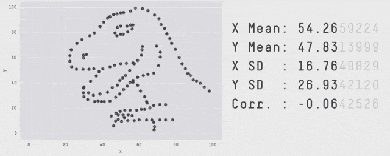
Same \(\mu_X, \mu_Y, \sigma_X, \sigma_Y, \rho_{XY}, \beta_{Y|X}, \dots\) - OLS can’t distinguish
Why Visualization?
Modeling and visualizing are not sequential:
- Build a model, where does it fail?
- See a pattern, does it hold up in a model / test?
ggplot2
ggplot2 provides a system (“grammar”) for visualizations:
geom_s: the actual thing to be plotted (points, lines, etc.)aes(aesthetics): mapping of aspects of datascale_s: control mapping from ‘data space’ to ‘graphics space’theme: basic non-data-dependent plot elementsguides: legendsstat_s: transformations of data used to plot (CDF, histogram counts)
ggplot2 - Worked Example
Let’s plot the penguins data. To avoid warnings, use a no-NA version:
ggplot2 - Worked Example
Need to map specific variables to aspects of plots: aes mapping
ggplot2 - Worked Example
Add a geom_ to draw plot elements
ggplot2 - Worked Example
Replace default labels:
ggplot2 - Worked Example
Replace default labels:
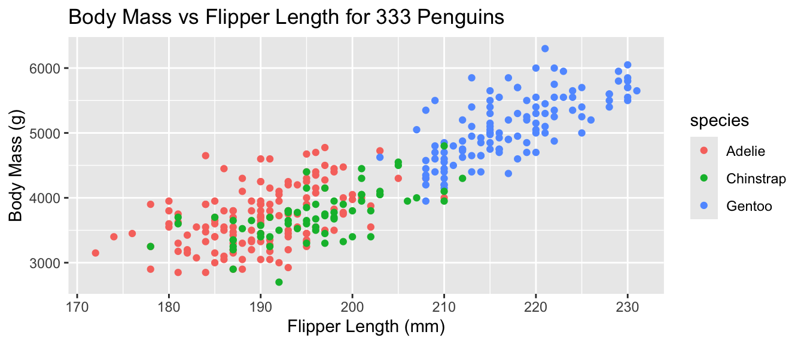
- Additional aesthetic (
color) inherited bygeom_point - Automatic identification of categorical (factor) data
ggplot2 - Worked Example
Replace default color scale:
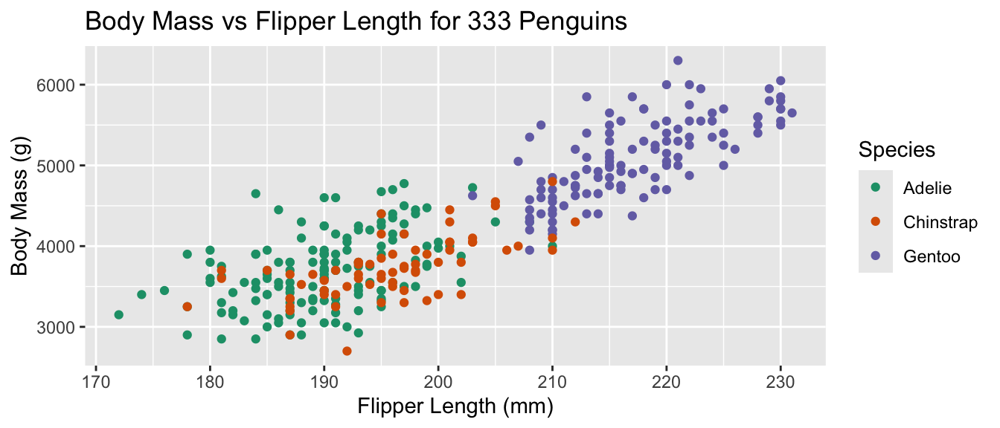
- Override default color scale with
scale_color_brewer - Colors taken from work of Cynthia Brewer (PSU)
- Using a
qualitative palette here because no order to species
ggplot2 - Worked Example
Change theme for non-data elements:
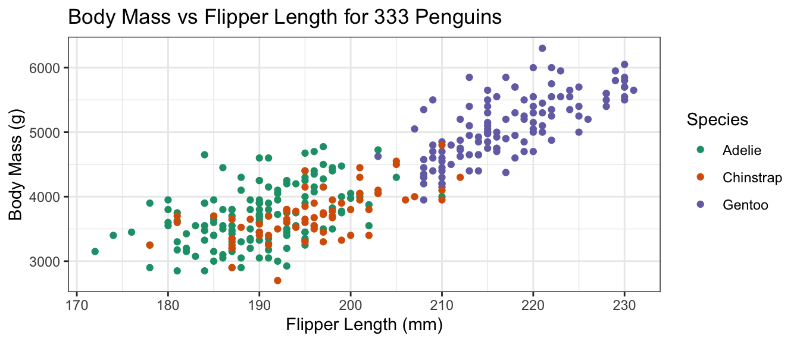
- Default
theme_grey() - Replace by
theme_bw()(Black & White) - Many more themes available
ggplot2 - Worked Example
Override default aesthetic to change shape of points:
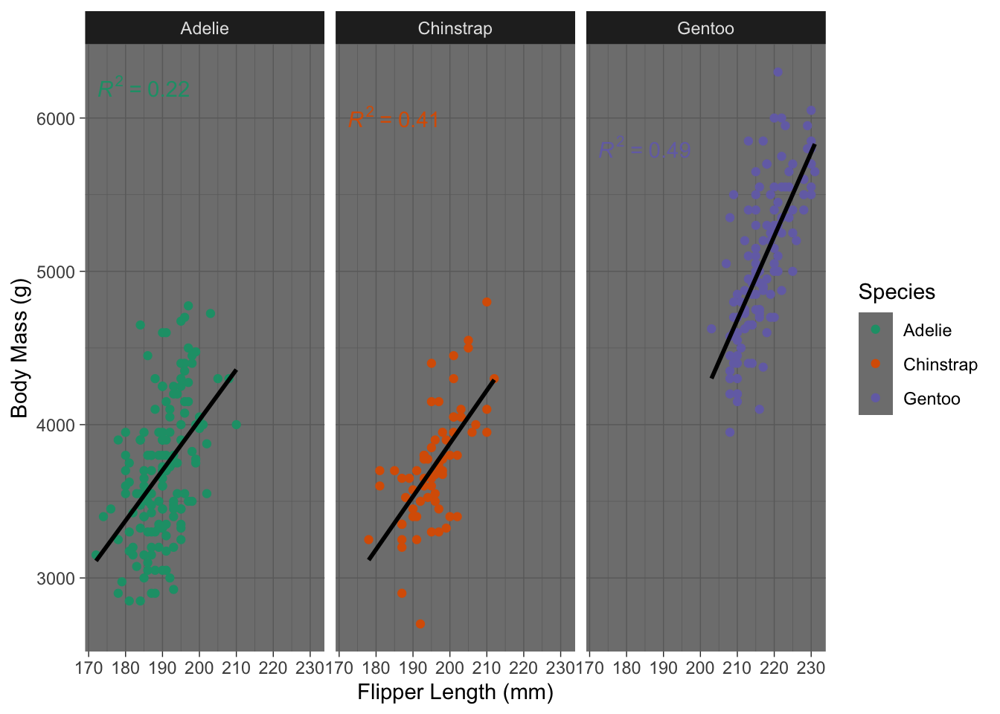
- Override default
shapeaesthetic - Provide directly to
geom_point, not viaaessince not data dependent - See ?
scale_shape_discretefor table of values
ggplot2 - Worked Example
Add trend lines with stat_smooth:
ggplot(penguins_ok,
aes(x=flipper_len, y=body_mass, color=species)) +
geom_point(shape=15) +
stat_smooth(method="lm", se=FALSE) +
xlab("Flipper Length (mm)") + ylab("Body Mass (g)") +
ggtitle("Body Mass vs Flipper Length for 333 Penguins") +
scale_color_brewer(name="Species", type="qual", palette=2) +
theme_bw()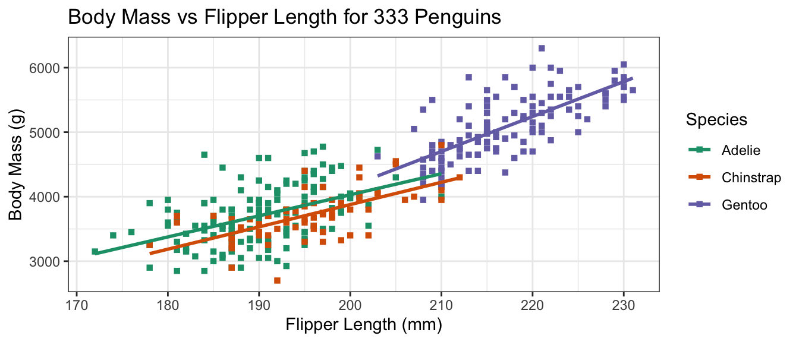
stat_s implement transformationsstat_smoothmarks a trend- Specify use of OLS (
lm= linear model) + disable SE shading
ggplot2 - Worked Example
Break data into subplots (“facets”) to avoid over-plotting:
ggplot(penguins_ok,
aes(x=flipper_len, y=body_mass, color=species)) +
geom_point(shape=15) + stat_smooth(method="lm", se=FALSE) +
xlab("Flipper Length (mm)") + ylab("Body Mass (g)") +
ggtitle("Body Mass vs Flipper Length for 333 Penguins") +
scale_color_brewer(name="Species", type="qual", palette=2) +
theme_bw() + facet_wrap(~species)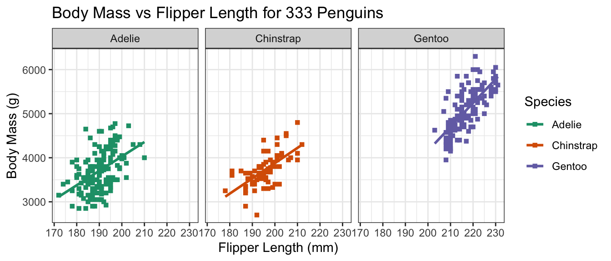
facet_wrap(split by one grouping) orfacet_grid(show all pairs of groups)group_byof plotting- Called “small multiples”
ggplot2 - Worked Example
Remove redundant legend:
ggplot(penguins_ok,
aes(x=flipper_len, y=body_mass, color=species)) +
geom_point(shape=15) + stat_smooth(method="lm", se=FALSE) +
xlab("Flipper Length (mm)") + ylab("Body Mass (g)") +
ggtitle("Body Mass vs Flipper Length for 333 Penguins") +
scale_color_brewer(name="Species", type="qual", palette=2) +
theme_bw() + facet_wrap(~species) +
guides(color="none")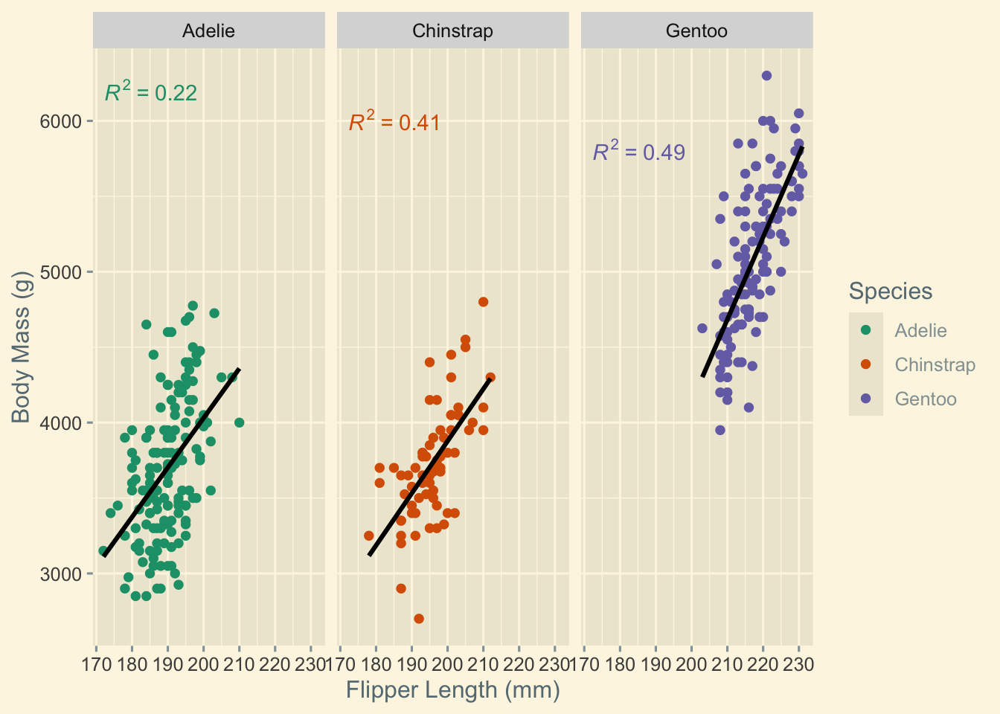
guidescontrols legends (also viascale_*)- Here redundant with facet labels
ggplot2 Workflow
Take a sad plot and make it better
Start with exploratory graphics:
- Quick and easy
- Find the story you want to tell
- Let the data drive you
- More use of raw data
Iterate to publication-quality graphics:
- Repeat to improve quality
- Tell a story to your reader
- More use of transformations
ggplot2 Workflow
- Many
geom_choices in documentation - Individual pages list required and optional aesthetics
Many ways to get the same result
Practice Exercise
ggplot2 provides diamonds data of ~54K diamonds
- Size, quality, price
- 4 C’s of Diamonds: Color, Cut, Clarity, Carat (Weight)
Return to breakout rooms for Practice Activity #01
ggplot2 Customization - Themes
The theme mechanism provides extensive opportunities to customize:
<theme> List of 144
$ line : <ggplot2::element_line>
..@ colour : chr "black"
..@ linewidth : num 0.5
..@ linetype : num 1
..@ lineend : chr "butt"
..@ linejoin : chr "round"
..@ arrow : logi FALSE
..@ arrow.fill : chr "black"
..@ inherit.blank: logi TRUE
$ rect : <ggplot2::element_rect>
..@ fill : chr "white"
..@ colour : chr "black"
..@ linewidth : num 0.5
..@ linetype : num 1
..@ linejoin : chr "round"
..@ inherit.blank: logi TRUE
$ text : <ggplot2::element_text>
..@ family : chr ""
..@ face : chr "plain"
..@ italic : chr NA
..@ fontweight : num NA
..@ fontwidth : num NA
..@ colour : chr "black"
..@ size : num 11
..@ hjust : num 0.5
..@ vjust : num 0.5
..@ angle : num 0
..@ lineheight : num 0.9
..@ margin : <ggplot2::margin> num [1:4] 0 0 0 0
..@ debug : logi FALSE
..@ inherit.blank: logi TRUE
$ title : <ggplot2::element_text>
..@ family : NULL
..@ face : NULL
..@ italic : chr NA
..@ fontweight : num NA
..@ fontwidth : num NA
..@ colour : NULL
..@ size : NULL
..@ hjust : NULL
..@ vjust : NULL
..@ angle : NULL
..@ lineheight : NULL
..@ margin : NULL
..@ debug : NULL
..@ inherit.blank: logi TRUE
$ point : <ggplot2::element_point>
..@ colour : chr "black"
..@ shape : num 19
..@ size : num 1.5
..@ fill : chr "white"
..@ stroke : num 0.5
..@ inherit.blank: logi TRUE
$ polygon : <ggplot2::element_polygon>
..@ fill : chr "white"
..@ colour : chr "black"
..@ linewidth : num 0.5
..@ linetype : num 1
..@ linejoin : chr "round"
..@ inherit.blank: logi TRUE
$ geom : <ggplot2::element_geom>
..@ ink : chr "black"
..@ paper : chr "white"
..@ accent : chr "#3366FF"
..@ linewidth : num 0.5
..@ borderwidth: num 0.5
..@ linetype : int 1
..@ bordertype : int 1
..@ family : chr ""
..@ fontsize : num 3.87
..@ pointsize : num 1.5
..@ pointshape : num 19
..@ colour : NULL
..@ fill : NULL
$ spacing : 'simpleUnit' num 5.5points
..- attr(*, "unit")= int 8
$ margins : <ggplot2::margin> num [1:4] 5.5 5.5 5.5 5.5
$ aspect.ratio : NULL
$ axis.title : NULL
$ axis.title.x : <ggplot2::element_text>
..@ family : NULL
..@ face : NULL
..@ italic : chr NA
..@ fontweight : num NA
..@ fontwidth : num NA
..@ colour : NULL
..@ size : NULL
..@ hjust : NULL
..@ vjust : num 1
..@ angle : NULL
..@ lineheight : NULL
..@ margin : <ggplot2::margin> num [1:4] 2.75 0 0 0
..@ debug : NULL
..@ inherit.blank: logi TRUE
$ axis.title.x.top : <ggplot2::element_text>
..@ family : NULL
..@ face : NULL
..@ italic : chr NA
..@ fontweight : num NA
..@ fontwidth : num NA
..@ colour : NULL
..@ size : NULL
..@ hjust : NULL
..@ vjust : num 0
..@ angle : NULL
..@ lineheight : NULL
..@ margin : <ggplot2::margin> num [1:4] 0 0 2.75 0
..@ debug : NULL
..@ inherit.blank: logi TRUE
$ axis.title.x.bottom : NULL
$ axis.title.y : <ggplot2::element_text>
..@ family : NULL
..@ face : NULL
..@ italic : chr NA
..@ fontweight : num NA
..@ fontwidth : num NA
..@ colour : NULL
..@ size : NULL
..@ hjust : NULL
..@ vjust : num 1
..@ angle : num 90
..@ lineheight : NULL
..@ margin : <ggplot2::margin> num [1:4] 0 2.75 0 0
..@ debug : NULL
..@ inherit.blank: logi TRUE
$ axis.title.y.left : NULL
$ axis.title.y.right : <ggplot2::element_text>
..@ family : NULL
..@ face : NULL
..@ italic : chr NA
..@ fontweight : num NA
..@ fontwidth : num NA
..@ colour : NULL
..@ size : NULL
..@ hjust : NULL
..@ vjust : num 1
..@ angle : num -90
..@ lineheight : NULL
..@ margin : <ggplot2::margin> num [1:4] 0 0 0 2.75
..@ debug : NULL
..@ inherit.blank: logi TRUE
$ axis.text : <ggplot2::element_text>
..@ family : NULL
..@ face : NULL
..@ italic : chr NA
..@ fontweight : num NA
..@ fontwidth : num NA
..@ colour : chr "#4D4D4DFF"
..@ size : 'rel' num 0.8
..@ hjust : NULL
..@ vjust : NULL
..@ angle : NULL
..@ lineheight : NULL
..@ margin : NULL
..@ debug : NULL
..@ inherit.blank: logi TRUE
$ axis.text.x : <ggplot2::element_text>
..@ family : NULL
..@ face : NULL
..@ italic : chr NA
..@ fontweight : num NA
..@ fontwidth : num NA
..@ colour : NULL
..@ size : NULL
..@ hjust : NULL
..@ vjust : num 1
..@ angle : NULL
..@ lineheight : NULL
..@ margin : <ggplot2::margin> num [1:4] 2.2 0 0 0
..@ debug : NULL
..@ inherit.blank: logi TRUE
$ axis.text.x.top : <ggplot2::element_text>
..@ family : NULL
..@ face : NULL
..@ italic : chr NA
..@ fontweight : num NA
..@ fontwidth : num NA
..@ colour : NULL
..@ size : NULL
..@ hjust : NULL
..@ vjust : num 0
..@ angle : NULL
..@ lineheight : NULL
..@ margin : <ggplot2::margin> num [1:4] 0 0 2.2 0
..@ debug : NULL
..@ inherit.blank: logi TRUE
$ axis.text.x.bottom : NULL
$ axis.text.y : <ggplot2::element_text>
..@ family : NULL
..@ face : NULL
..@ italic : chr NA
..@ fontweight : num NA
..@ fontwidth : num NA
..@ colour : NULL
..@ size : NULL
..@ hjust : num 1
..@ vjust : NULL
..@ angle : NULL
..@ lineheight : NULL
..@ margin : <ggplot2::margin> num [1:4] 0 2.2 0 0
..@ debug : NULL
..@ inherit.blank: logi TRUE
$ axis.text.y.left : NULL
$ axis.text.y.right : <ggplot2::element_text>
..@ family : NULL
..@ face : NULL
..@ italic : chr NA
..@ fontweight : num NA
..@ fontwidth : num NA
..@ colour : NULL
..@ size : NULL
..@ hjust : num 0
..@ vjust : NULL
..@ angle : NULL
..@ lineheight : NULL
..@ margin : <ggplot2::margin> num [1:4] 0 0 0 2.2
..@ debug : NULL
..@ inherit.blank: logi TRUE
$ axis.text.theta : NULL
$ axis.text.r : <ggplot2::element_text>
..@ family : NULL
..@ face : NULL
..@ italic : chr NA
..@ fontweight : num NA
..@ fontwidth : num NA
..@ colour : NULL
..@ size : NULL
..@ hjust : num 0.5
..@ vjust : NULL
..@ angle : NULL
..@ lineheight : NULL
..@ margin : <ggplot2::margin> num [1:4] 0 2.2 0 2.2
..@ debug : NULL
..@ inherit.blank: logi TRUE
$ axis.ticks : <ggplot2::element_line>
..@ colour : chr "#333333FF"
..@ linewidth : NULL
..@ linetype : NULL
..@ lineend : NULL
..@ linejoin : NULL
..@ arrow : logi FALSE
..@ arrow.fill : chr "#333333FF"
..@ inherit.blank: logi TRUE
$ axis.ticks.x : NULL
$ axis.ticks.x.top : NULL
$ axis.ticks.x.bottom : NULL
$ axis.ticks.y : NULL
$ axis.ticks.y.left : NULL
$ axis.ticks.y.right : NULL
$ axis.ticks.theta : NULL
$ axis.ticks.r : NULL
$ axis.minor.ticks.x.top : NULL
$ axis.minor.ticks.x.bottom : NULL
$ axis.minor.ticks.y.left : NULL
$ axis.minor.ticks.y.right : NULL
$ axis.minor.ticks.theta : NULL
$ axis.minor.ticks.r : NULL
$ axis.ticks.length : 'rel' num 0.5
$ axis.ticks.length.x : NULL
$ axis.ticks.length.x.top : NULL
$ axis.ticks.length.x.bottom : NULL
$ axis.ticks.length.y : NULL
$ axis.ticks.length.y.left : NULL
$ axis.ticks.length.y.right : NULL
$ axis.ticks.length.theta : NULL
$ axis.ticks.length.r : NULL
$ axis.minor.ticks.length : 'rel' num 0.75
$ axis.minor.ticks.length.x : NULL
$ axis.minor.ticks.length.x.top : NULL
$ axis.minor.ticks.length.x.bottom: NULL
$ axis.minor.ticks.length.y : NULL
$ axis.minor.ticks.length.y.left : NULL
$ axis.minor.ticks.length.y.right : NULL
$ axis.minor.ticks.length.theta : NULL
$ axis.minor.ticks.length.r : NULL
$ axis.line : <ggplot2::element_blank>
$ axis.line.x : NULL
$ axis.line.x.top : NULL
$ axis.line.x.bottom : NULL
$ axis.line.y : NULL
$ axis.line.y.left : NULL
$ axis.line.y.right : NULL
$ axis.line.theta : NULL
$ axis.line.r : NULL
$ legend.background : <ggplot2::element_rect>
..@ fill : NULL
..@ colour : logi NA
..@ linewidth : NULL
..@ linetype : NULL
..@ linejoin : NULL
..@ inherit.blank: logi TRUE
$ legend.margin : NULL
$ legend.spacing : 'rel' num 2
$ legend.spacing.x : NULL
$ legend.spacing.y : NULL
$ legend.key : NULL
$ legend.key.size : 'simpleUnit' num 1.2lines
..- attr(*, "unit")= int 3
$ legend.key.height : NULL
$ legend.key.width : NULL
$ legend.key.spacing : NULL
$ legend.key.spacing.x : NULL
$ legend.key.spacing.y : NULL
$ legend.key.justification : NULL
$ legend.frame : NULL
$ legend.ticks : NULL
$ legend.ticks.length : 'rel' num 0.2
$ legend.axis.line : NULL
$ legend.text : <ggplot2::element_text>
..@ family : NULL
..@ face : NULL
..@ italic : chr NA
..@ fontweight : num NA
..@ fontwidth : num NA
..@ colour : NULL
..@ size : 'rel' num 0.8
..@ hjust : NULL
..@ vjust : NULL
..@ angle : NULL
..@ lineheight : NULL
..@ margin : NULL
..@ debug : NULL
..@ inherit.blank: logi TRUE
$ legend.text.position : NULL
$ legend.title : <ggplot2::element_text>
..@ family : NULL
..@ face : NULL
..@ italic : chr NA
..@ fontweight : num NA
..@ fontwidth : num NA
..@ colour : NULL
..@ size : NULL
..@ hjust : num 0
..@ vjust : NULL
..@ angle : NULL
..@ lineheight : NULL
..@ margin : NULL
..@ debug : NULL
..@ inherit.blank: logi TRUE
$ legend.title.position : NULL
$ legend.position : chr "right"
$ legend.position.inside : NULL
$ legend.direction : NULL
$ legend.byrow : NULL
$ legend.justification : chr "center"
$ legend.justification.top : NULL
$ legend.justification.bottom : NULL
$ legend.justification.left : NULL
$ legend.justification.right : NULL
$ legend.justification.inside : NULL
[list output truncated]
@ complete: logi TRUE
@ validate: logi TRUEggplot2 Customization - Themes
Best practice:
- Pick a starting theme you like and customize
theme_STARTER() + theme(things.i.change="to.new.values")
ggplot2 Customization - Themes
ggplot2 has 8 built-in themes. The ggthemes and ThemePark packages has many more!
Let’s define a basic theme and see how it is rendered in different themes:
Reminder: ggplot2 only displays plot when printed so assign to variable if you want to keep modifying
ggplot2 Customization - Themes
Default theme (theme_grey())
ggplot2 Customization - Themes
Black-and-White theme (ggplot2::theme_bw()) - MW’s favorite
ggplot2 Customization - Themes
Minimal theme (ggplot2::theme_minimal())
ggplot2 Customization - Themes
Light theme (ggplot2::theme_light())

ggplot2 Customization - Themes
Dark theme (ggplot2::theme_dark())
ggplot2 Customization - Themes
Old-school MS Excel theme (ggthemes::theme_excel())
ggplot2 Customization - Themes
Google Docs theme (ggthemes::theme_gdocs())
ggplot2 Customization - Themes
Economist theme (ggthemes::theme_economist())
ggplot2 Customization - Themes
Wall St Journal theme (ggthemes::theme_wsj())
ggplot2 Customization - Themes
Edward Tufte theme (ggthemes::theme_tufte())
ggplot2 Customization - Themes
Barbie theme (ThemePark::theme_barbie())
ggplot2 Customization - Themes
Oppenheimer theme (ThemePark::theme_oppenheimer())
ggplot2 Customization - Themes
Avatar theme (ThemePark::theme_avatar())
ggplot2 Customization - Themes
Spiderman theme (ThemePark::theme_spiderman())
ggplot2 Customization - Themes
Game of Thrones theme (ThemePark::theme_gameofthrones())
ggplot2 Customization - Themes
Avatar theme (ThemePark::theme_avatar())
ggplot2 Customization - Themes
Most of these are silly
- But
ggplot2has a large community you can tap into RGraph Gallery has many worked examples ofggplot2ggplot2Extensions Gallery for ‘add-ins’ providing additional visualizations
Adapt and extend!
Color Palettes
Three types of color palettes:
- Sequential: ordered from 0 to “high”
- Example: rain forecast in different areas
- Diverging: ordered from -X to +Y with meaningful 0 in the middle
- Example: political leaning
- Qualitative: no ordering
- Example: penguin species
Two ways to make a color scale for quantitative variables:
- Binned: \([0, 1)\) light green, \([1, 3)\) medium green; \([3, 5]\) dark green
- Continuous
Color Palettes
I often rely on the work of Cynthia Brewer
- Officially for cartography, but generally useful
- Different (punny)
ggplot2names for different derived scales
Color Palettes
scale_color_brewer() for discrete scales

Color Palettes
scale_color_distiller() for continuous scales
Color Palettes
scale_color_fermenter() for binned scales

Color Palettes
Color Palettes
Color Palettes
“Hard-coding” Colors
scale_color_identity will take color names from a column:
Practice Exercise
Return to the cdiac data from the Warm-Up
- Visualize trends in time series
geom_lineto create line plots
Return to breakout rooms for Practice Activity #02
Simpson’s Paradox
Data Visualization can be used to find counterintuitive trends in data:
Simpson’s Paradox
Overall trend does not need to match trend within groups
ggplot(simpsons_paradox, aes(x=x, y=y, color=group)) +
geom_point() + geom_smooth(method="lm") + facet_grid(~group)`geom_smooth()` using formula = 'y ~ x'Modeling: ANCOVA or Mixed-Effects Regression
UCB Graduate Admissions
1973: UC Berkeley was concerned about bias in Grad School Admissions
- Higher fraction of men admitted than women
- Bickel, Hammell, O’Connell asked to study
- When they try to find the source of this bias, there is none!
- Each department admits women at a higher rate than men
- Women applied to more selective programs at a higher rate
This phenomenon occurs throughout the social sciences: the best doctors have the worst patient outcomes
BHO note:
Women are shunted by their socialization and education toward fields of graduate study that are generally more crowded, less productive of completed degrees, and less well funded, and that frequently offer poorer professional employment prospects.
Red State Blue State
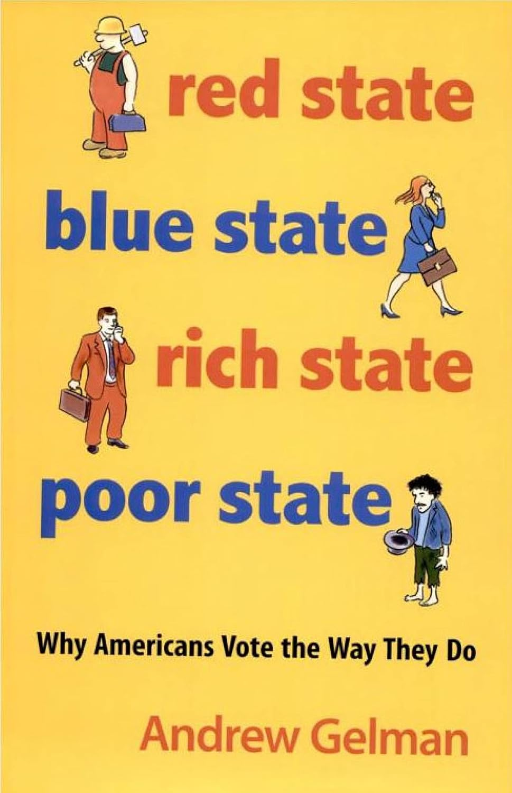
Red State Blue State
Facts about US politics (c. 2008):
- Rich people vote R at higher rates
- Rich states vote R at lower rates
- Rich states are rich because they have richer people
How can we reconcile this?
Red State Blue State
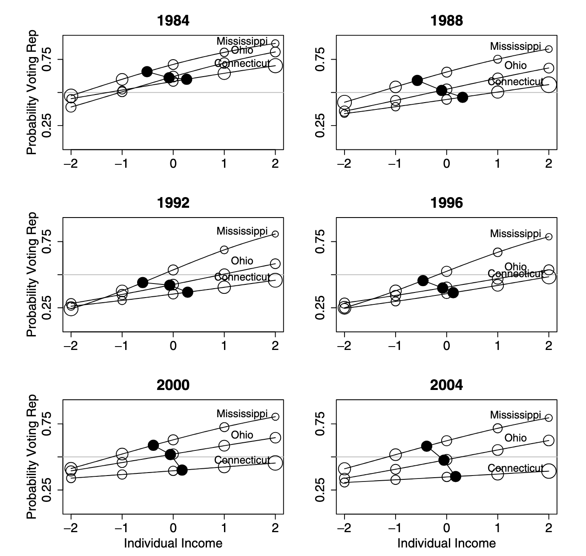
Figure from Gelman et al, Q.J.Poli.Sci. 2007.
For more, see this presentation.
Additional Resources
Textbook: R for Data Science, Part II: Visualize
More on data visualization:
- C. Wilke. Fundamentals of Data Visualization
- K. Healy. Data Visualization
- H. Wickham
ggplot2: Elegant Visualizations for Data Analysis
General advice on data science projects:
- B. Yu and R. Barter Veridical Data Science
Pre-Assignment #07 FAQs
ggplot2 vs Tableau
- Tableau
- $$$
- IT department automatically integrates with data sources
- Easy, if it does what you want
ggplot2- Free
- Can use arbitrary data sources, with effort
- Flexible / customizable
ggplot2 vs matplotlib
ggplot2- Data visualizations
- Enforces “good practice” via
gg
matplotlib- Scientific visualizations
- More flexible for good or for ill
- Inspired by
Matlabplotting
Closest Python analogue to ggplot2 is seaborn
Why use + instead of |>
ggplot2is older than|>- Per H. Wickham: if
ggplot3ever gets made, will use|> - Unlikely to change: too much code depends on it
Performance
I tried an interactive plot with \(n=132,000\) points, but it brought my computer to a halt. [Ed. Paraphrased]
That’s a lot of plots!!
ggplot2 is itself pretty fast, but it depends on (possibly slow) graphics backends
- Different file types implement graphics differently.
- You should also think about overplotting / pre-processing
We’ll talk more about interactivity next week
Overplotting
Large data sets can lead to overplotting:
- Points “on top of” each other
- Can also occur with “designed” experiments / rounded data
Ways to address:
geom_jittergeom_hex
Overplotting
Jitter: add a bit of random noise so points don’t step on each other
Hexagonal Binning
Little “heatmaps” of counts. Hexagons to avoid weird rounding artifacts
Inside vs. Outside aes()
aes maps data to values. Outside of aes, set constant value

Inside vs. Outside aes()
aes maps data to values. Outside of aes, set constant value
Global vs geom_ specific aes()
- Elements set in
ggplot()apply to entire plot - Elements set in specific
geomapply there only- Override globals
Global vs geom_ specific aes()
- Elements set in
ggplot()apply to entire plot - Elements set in specific
geomapply there only- Override globals
How to Select geoms
Two “modes”
- Exploratory data analysis: Quick, rapid iteration, for your eyes only
- Let the data tell you a story
- Low pre-processing: scatter plots, lines, histograms
- “Publication quality”: Polished, for someone else
- You tell the reader a story
- More processing, more modeling: trends, line segments, ribbons
Order of Layers
Order of layers technically matters, but the effect is small
p1 <- ggplot(penguins_ok, aes(x=bill_len, y=flipper_len)) +
geom_point(color="black") +
geom_smooth(color="blue", method="lm") + ggtitle("Line on points")
p2 <- ggplot(penguins_ok, aes(x=bill_len, y=flipper_len)) +
geom_smooth(color="blue", method="lm") +
geom_point(color="black") + ggtitle("Points on line")
p1 + p2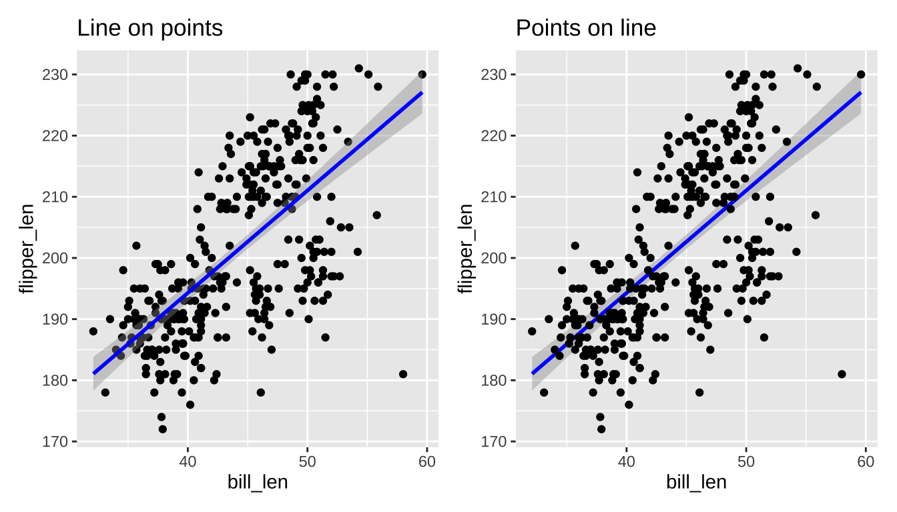
Order of Layers
Order matters more with theme. Adding a theme_*() will override any theme() customization you did:
stat_poly_line vs stat_smooth
By default stat_smooth fits a generalized additive model (GAM)
ggpmisc::stat_poly_line and stat_poly_eq fit linear models, so they can expose more machinery.
What is a GAM?
- Take 9890 with me (typically Spring semester) to find out!
- Free Course: “GAMs in R” from Noam Ross
Titles and Captions
ggplot() +
labs(title="Title", subtitle="Subtitle", caption="Caption",
tag="Tag", alt="Alt-Text", alt_insight="Alt-Insight")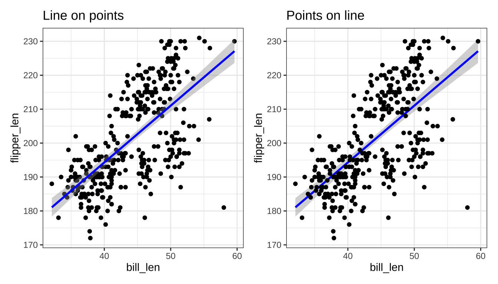
+ggtitle("text") is just shorthand for +labs(title="text")
Importance of Aesthetics
Perceptually:
- Location > Color > Size > Shape
Humans are better at:
- Length > Area > Volume
FAQ: When to Use Facets?
Facets are group_by for plots. Useful for
- Distinguishing intra- vs inter-group trends
- Avoiding overplotting
Twin Axes Plots
How can I implement a dual (twin) axis plot in
ggplot2?
Disfavored. But if you must …
Doesn’t allow arbitrary secondary axes; allows transformed axes (e.g., Celsius and Fahrenheit)
Embedding Images
See the ggimage or ggflags package for images as “points”:
if(!require("ggflags", quiet=TRUE)){
devtools::install_github("jimjam-slam/ggflags");
}
library(ggflags)
d <- data.frame(x=rnorm(50), y=rnorm(50),
country=sample(c("ar","fr", "nz", "gb", "es", "ca"), 50, TRUE),
stringsAsFactors = FALSE)
ggplot(d, aes(x=x, y=y, country=country, size=x)) +
geom_flag() + scale_country()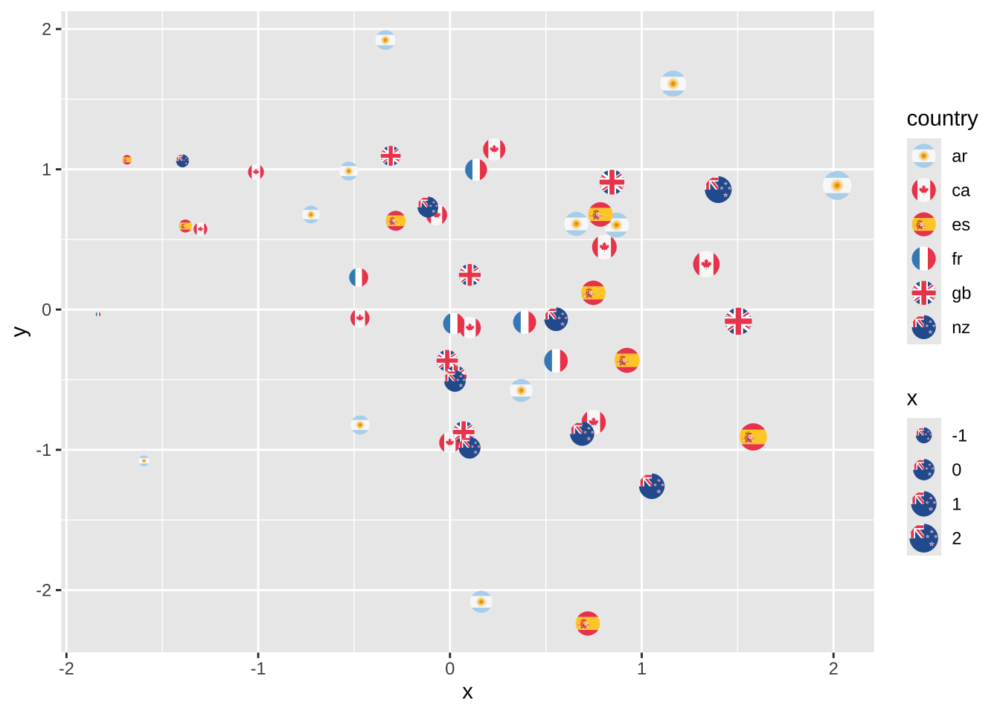
Embedding Images
See cowplot::draw_image() for image background:
library(cowplot)
p <- ggplot(iris, aes(x = Sepal.Length, fill = Species)) +
geom_density(alpha = 0.7) +
scale_y_continuous(expand = expansion(mult = c(0, 0.05))) +
theme_half_open(12)
logo_file <- system.file("extdata", "logo.png", package = "cowplot")
ggdraw() +
draw_image(
logo_file, scale = .7
) +
draw_plot(p)Warning: Package `magick` is required to draw images. Image not drawn.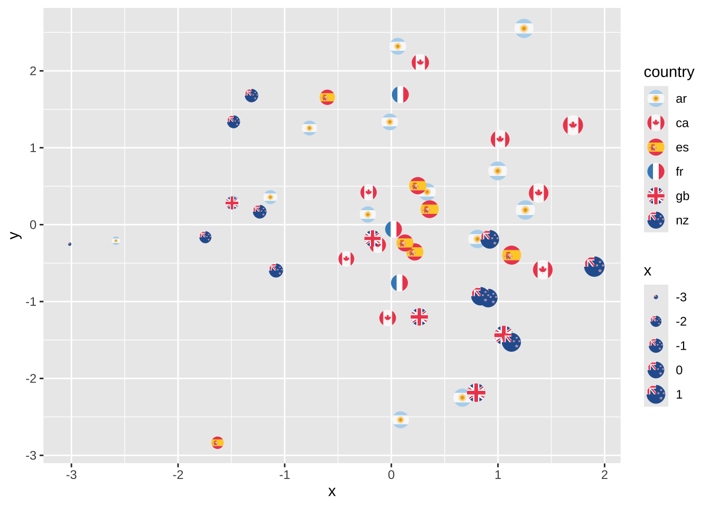
Wrap-Up
Review
ggplot2:
- Structured graphics for statistical visualization
- Grammar of Graphics for structured plotting
geom,stat,scale,aes, etc.
- Integrates with
dplyr,tidyrto get into suitable format
Upcoming Work
Upcoming work from course calendar
- Pre-Assignment #08 due 2025-10-27 at 11:59pm ET
- Mini-Project #02 due on 2025-10-31 at 11:59pm ET
Life Tip of the Week
Tips for Technical Interviews
Some tips for technical interviews:
Communicate!
Test!
Anticipate the Danger Zone!
Communicate!
Talk / comment throughout a technical interview
- Live interview: vocalize thought process
- Async interview: comment all your choices
- Allow your interviewer to give “partial credit”
- Most questions aren’t fully-precise, seek clarification
- Share your thought process
Test!
Check your work as you go
- Mistakes that only appear ‘at scale’ are rare
- Test on small data, first terms of sequence, etc.
Easier to check simple output than code
Suppose you are asked to compute 100th number of a sequence
- Don’t code and submit
- Look at first 5 elements and check by hand
Suppose you are asked to analyze a data set
- Try your code on a small data set first
- Design your data to make correct answer evident
Danger Zone!
Know the ‘sharp edges’ of the tools you will be tested on:
NULLhandling inSQL- Missing values in
R - Groups of 0 or 1 observation
etc.
Technical Interviews
Your interviewer doesn’t ultimately care if you get the right answer on a puzzle
Do you have a process to get the right answer on a problem that matters?
- Do you handle edge cases?
- Do you resolve ambiguities in problem statement?
- Do you test well or just “code and pray”?